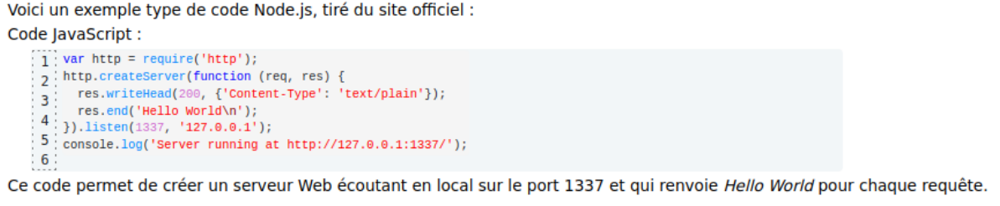
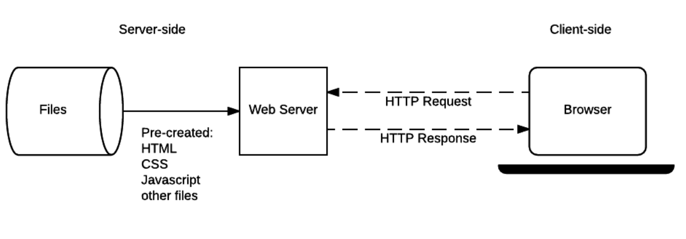
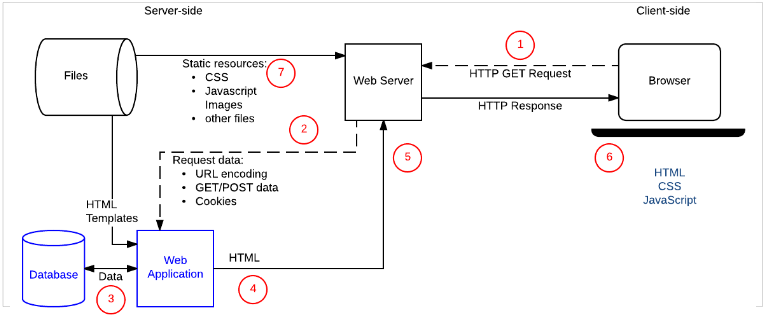

Javascript
 Enes Barut | Fanny Billet | Quentin Vautier
Enes Barut | Fanny Billet | Quentin Vautier
Qu'est-ce que JavaScript ?
Définition générale
Le JavaScript (JS) est un langage de script incorporé dans un document HTML.
Langage de script : langage interprété comme Python.
Historiquement il s'agit même du premier langage de script pour le Web. C’est un langage de programmation qui permet d'apporter des améliorations au langage HTML.
Créé en 10 jours par Brendan Eich en 1995, la première version de JS s’appelait Mocha. La syntaxe ressemblait à du Java, mais il contenait déjà des fonctionnalités du JS d’aujourd’hui.* Il était conçu pour le navigateur Netscape, pour le rendre + dynamique.
Il a ensuite été renommé LiveScript pour des raisons marketing, puis JavaScript, pour les mêmes raisons. (Java étant très connu à l’époque, il a été décidé qu’un positionnement en tant que “petit frère de Java” serait utile.)
Il est devenu le langage central du web, c’est le langage le + utilisé sur Github.
A quoi ça sert ?
JavaScript apporte de l'interactivité et du dynamisme aux sites web. Il a été créé initialement pour “rendre les pages web vivantes”.
Par exemple lorsque l'internaute clique sur certains endroits de la page le Javascript est capable de récupérer ces clics puis de réagir à ces clics en exécutant une liste d'instructions choisies par le programmeur.
Aujourd’hui, on peut presque tout faire avec JS : des applis web, des “progressives web apps”, apps mobiles et tablettes hybrides, logiciels, serveur HTTP et API back-end (Node.js), apps TV et objets connectés, jeux, VR, animations et interface riches, animations autonomes (pour remplacer Flash)...
R I P - Flash
“Any application that can be written in JavaScript, will eventually be written in JavaScript.”
citation de Jeff Atwood (co-fondateur de Stack Overflow), connue sous le nom de “Atwood’s Law” (2007)JavaScript engine
(moteur JavaScript)Aujourd’hui, JS peut s'exécuter sur un navigateur mais aussi sur n’importe quelle machine qui a un programme spécial : le JavaScript engine. Il sont généralement déjà intégrés dans les navigateurs web.
Le 1er JS engine a été créé en même temps que la 1ere version de JS. Au début, c’était un interpréteur assez rudimentaire qui a évolué pour devenir aujourd’hui SpiderMonkey, l’engine utilisé pour Firefox.
Le 1er engine “moderne” était V8, pour Chrome, en 2008. Ses performances étaient bien meilleures que n’importe quel engine précédent. L’innovation clé était la “just-in-time compilation” (compilation à la volée) qui améliore considérablement les temps d'exécution. V8 est l’engine le plus utilisé aujourd’hui.
ECMAScript
Il y a d’autres langages de script “concurrents” de JS, le 1er étant JScript, sorti en 1996 par Microsoft pour Internet Explorer 3. Il y a aussi ActionScript, utilisé pour Adobe Flash (RIP).
L'ECMAScript a vu le jour en 1997 dans le but d'uniformiser l'interprétation de ces différents langages de script. C’est un ensemble de normes standardisées par Ecma International (qui est une organisation de standardisation) dans le cadre de la spécification ECMA-262.
Qui dit “différents” langages de script, dit “différents” engines (par exemple l’engine Chakra(JScript) pour Internet Explorer, il y a une version Chakra(JS) pour Microsoft Edge). Ils sont aussi regroupés dans ce qu’on appelle les “ECMAScript engines”.*
Que fait le JS sur votre page Comment ça marche ?
Le Javascript contrairement à HTML et à CSS est un vrai langage de programmation avec variables, tests de conditions, boucles et fonctions avec en plus deux choses essentielles qui sont :
1 - L'interface avec le document.
2 - Le canal de communication avec le serveur (AJAX).
- L'internaute clique sur une zone du document.
- Le clic est transmis au Javascript.
- Javascript va chercher des données sur le serveur.
- Javascript se sert des données pour mettre à jour le document.
- Le document est devenu interactif et dynamique !

Coté client
Alert & prompt : window.alert(message);
// La méthode alert permet d'afficher une boîte de dialogue
// avec un message.
let message = "Mon message";
alert(message);
Alert & prompt : window.prompt(message, défaut);
// La méthode prompt permet d'afficher une boîte de dialogue
// avec un message qui invite l'utilisateur à saisir un texte
let messageSasie = prompt("Votre message")
typeof messageSaisie; // "String"
Ajax et Json
AJAX
(Asynchronous JavaScript and XML)Permet aux pages Web d’envoyer et de recevoir des données d’un serveur
évite aux clients d’attendre longtemps la réponse du serveur
C’est un ensemble de technologies :
- HTML (ou XHTML) et CSS pour la présentation
- Le Document Object Model (DOM) pour l’affichage dynamique et l’interaction avec les données
- XML pour l’échange de données et XSLT pour sa manipulation
- L’objet XMLHttpRequest pour la communication asynchrone
- JavaScript pour rassembler ces technologies
JSON
(JavaScript Object Notation)Stocker des informations de manière organisée
facile d’accès et lisible par l’homme
facile pour les machines d’analyser et de générer une résultat
Json.org définit JSON comme étant construit sur deux structures :
- Une collection de paires nom/valeur. Dans d’autre langages, ceci est réalisé sous forme d’objet, enregistrement, structure, dictionnaire, table de hachage ou tableau associatif.
- Une liste ordonnée de valeurs. Dans d’autre langages, cela est réalisé sous forme d’un tableau, vecteur, liste ou séquence.
Coté serveur
Node.js, le cas le plus connu, né en 2009 des mains de Ryan Dahl
APE pour Ajax Push Engine
Vert.x
Site statique
Site dynamique
Ou placer du Javascript & Comment executer du javascript ?

C’est une mauvaise habitude de polluer le HTML avec du JavaScript, en plus d’être inefficace. Dans cette méthode, on doit inclure l’attribut onclick="createParagraph()" sur chaque bouton où le JavaScript doit s’appliquer.
var el = document.getElementById("mycta");el.addEventListener("click", createParagraph);
Exemple
See the Pen ExgLwjV by QuentinV (@QuentinV) on CodePen.
https://codepen.io/QuentinV/pen/ExgLwjV?editors=1111 https://developer.mozilla.org/Javascript et Webscrapting
Web Scraping de contenu JavaScript en Python link stackoverflow | Youtuberequests-html
1 -Demande à l'url de la page :
from requests_html import HTMLSession
session = HTMLSession()
r = session.get(a_page_url)
2 - Rendez la réponse pour obtenir les bits générés par Javascript :
r.html.render()
exemple :
from requests_html import HTMLSession
session = HTMLSession()
r = session.get('http://python-requests.org/')
r.html.render()
r.html.search('Python 2 will retire in only {months} months!')['months']
'' #This is the result.
Les bibliothèques et frameworks
Les bibliothèquesUne bibliothèque est un ensemble de fonctions fournies en développement, que ce soient des classes ou un ensemble de fichiers objets.
Les frameworksLes frameworks (cadre de travail ou boîte à outils) n’est pas un programme indépendant, mais plutôt un ensemble cohérent de composants (comme les bibliothèques et les classes par exemple). Les frameworks constituent l’architecture logicielle d’une application et conditionnent considérablement le processus de développement.